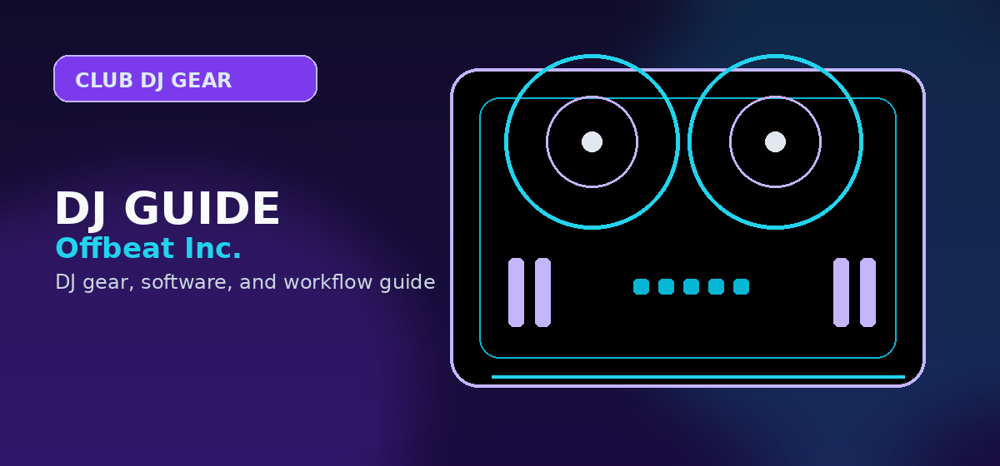

Pioneer CDJ-3000 Review 2026: Is the Industry Standard Still the Best Professional Media Player?
Comprehensive guide to Pioneer CDJ-3000 review 2026 professional media player club standard with practical recommendations and current buying notes — updated 2026.

Disclosure: This page uses affiliate links. We may earn a commission at no extra cost to you. Full disclosure →
The CDJ-3000 is still the safest answer for DJs who regularly play club booths built around Pioneer gear. The question in 2026 is not whether the player is capable. It is whether the premium price still makes sense versus a used CDJ-2000NXS2 setup or Denon’s SC6000. If your career depends on walking into Pioneer-standard booths and having your Rekordbox library behave exactly as expected, the CDJ-3000 is still easy to justify. If you mainly play at home or control your own rig, the value equation changes fast.
Who It’s For
The CDJ-3000 is built for working DJs, rental inventories, and venues that want minimal surprises. It is not the smartest first big-ticket purchase for most beginners.
- Best for: club residents, touring DJs, and serious home users who practice on Pioneer-style media players
- Maybe: event companies or studios that need booth-standard gear for guests
- Not ideal for: first-time buyers who would get more value from a controller or a cheaper media-player ecosystem
The most important advantage is familiarity. If you prepare in Rekordbox and play venues that already use Pioneer players and mixers, the CDJ-3000 reduces friction. That matters more in real gigs than having the longest feature list on paper.
Key Features That Still Matter
The headline improvements are not just cosmetic. The bigger screen, faster processor, improved touch response, and cleaner information density make track browsing and performance adjustments quicker under pressure.
What you are really paying for is not a spec-sheet win in every category. You are paying for a familiar layout, fast browsing, solid networking, and a player that most booth technicians and touring DJs already understand.
Workflow and Library Management
The CDJ-3000 makes the most sense when your whole workflow already runs through Rekordbox. Export your library properly, prep cues and playlists in advance, and the deck does exactly what a booth-standard player should do: load quickly, share media cleanly across linked units, and stay out of your way.
That matters in three common scenarios:
- Solo club sets: you want to plug in, confirm your playlists, and focus on the room rather than on format quirks
- B2B sets: Pro DJ Link makes shared library access and booth consistency easier
- Touring or guest slots: the closer your home practice environment is to the club booth, the smaller the translation gap
The tradeoff is ecosystem gravity. Denon’s Engine DJ platform can offer more obvious value and flexibility in some private-rig scenarios, but Pioneer still wins when compatibility with existing booths is the non-negotiable requirement.
CDJ-3000 vs CDJ-2000NXS2 vs Denon SC6000
| Category | Pioneer CDJ-3000 | Pioneer CDJ-2000NXS2 | Denon SC6000 |
|---|---|---|---|
| Price Range | Usually the most expensive option, roughly $2.3K to $2.5K new | Often cheaper on the used market, roughly mid-$1K range depending on condition | Usually below the CDJ-3000 new, often around the high-$1K range |
| Workflow | Best fit for current Pioneer club booths and modern Rekordbox prep | Still familiar in legacy Pioneer booths, but older and slower to navigate | Strong standalone workflow for DJs who control their own setup |
| Library Management | Excellent when your library is already organized in Rekordbox and shared over Pro DJ Link | Works with the same Pioneer prep logic, but feels older in daily use | Engine DJ is capable, but less universal in club environments |
| Key Features | Bigger touchscreen, faster response, booth-standard layout, refined performance feel | Proven reliability and familiarity, but clearly older hardware | Excellent display, strong feature value, compelling standalone option |
| Who It’s For | Touring DJs, club residents, and buyers who need current Pioneer booth parity | DJs who want cheaper Pioneer familiarity and can live with older hardware | DJs who want better feature-per-dollar value and do not need Pioneer booth conformity |
The Denon SC6000 is the strongest value challenger. The CDJ-2000NXS2 is the cheaper way into Pioneer familiarity. The CDJ-3000 wins when you care most about current-club workflow and least about bargain hunting.
Alternatives and Buying Strategy
If you are spending this much, buy for the environment you actually play in, not for forum bragging rights.
- Buy the CDJ-3000 if you need the current Pioneer feel, regularly encounter Pioneer booths, and want the cleanest handoff between home prep and club execution
- Buy a used CDJ-2000NXS2 setup if you want Pioneer familiarity for less money and can accept older hardware and a dated screen experience
- Buy the Denon SC6000 if you control your own rig and care more about value, screen real estate, and features than about matching the most common club booth exactly
- Buy a controller instead if you are still learning core performance skills or mostly play at home
For readers researching the Denon route, our Denon SC6000 review is the most relevant next read. If you are not actually at media-player budget yet, a modern controller guide is probably the better decision path than forcing a flagship purchase too early.
What Ownership Really Costs
The deck price is only part of the decision. A realistic CDJ-3000 setup usually means budgeting for a compatible mixer, reliable USB drives, cases or flight protection, networking cables, and enough prep time in Rekordbox to make the club-standard workflow worth paying for.
- Single-player buyers: this only makes sense if you already have access to matching gear elsewhere or you are adding one deck to an existing Pioneer setup
- Two-player home setups: the true spend climbs fast once you include the mixer, cases, stands, and the storage media you actually trust on gig night
- Used-market shoppers: should inspect cue and play buttons, jog feel, touchscreen responsiveness, and network ports instead of judging only by cosmetic wear
- Working DJs: can justify the premium more easily when practice on booth-matching hardware directly reduces mistakes in paid sets
- Home hobbyists: often get more real improvement by spending less on hardware and more on music, lessons, monitoring, or room treatment
That broader budget question is why the CDJ-3000 is easiest to recommend when the workflow itself earns money or directly supports professional bookings. If it is mainly an aspirational purchase, the opportunity cost gets much harder to defend.
Questions to Ask Before You Buy
- Do you actually play venues that already use current Pioneer media players?
- Are you buying one deck for practice, or committing to the cost of a full multi-player setup?
- Would a controller or Denon setup give you more actual hours behind the decks for the same budget?
- Is your music library already organized in Rekordbox well enough to benefit from the workflow advantage?
Verdict
The CDJ-3000 is still the right answer for booth-standard reliability, not because it dominates every feature category, but because it matches the workflow most professional clubs still expect. If universal compatibility, fast Rekordbox handoff, and booth familiarity are your priorities, it remains the safest premium choice. If value or home-rig flexibility matters more, the Denon SC6000 is the smarter place to compare next.
Where to Buy / Check Current Pricing
Compare live pricing before you commit. For a purchase this expensive, retailer service, warranty handling, and stock status matter almost as much as the raw price.
Quick Comparison: The Professional Landscape
| Feature | Pioneer CDJ-3000 | Pioneer CDJ-2000NXS2 | Denon SC6000 |
|---|---|---|---|
| Price Range | $$$$ (High) | $$$ (Used Market) | $$ (Value) |
| Workflow | Industry Standard | Classic Pro | Modern/Feature-Rich |
| Library | Rekordbox (Native) | Rekordbox (Native) | Engine DJ |
| Key Feature | MPU Performance | Reliability | Dual-Layer Playback |
| Best For | Touring/Clubs | Budget Pros | Creative DJs |
Official product and support pages
The CDJ-3000 is a professional media player purchase, not an efficient beginner upgrade.
Buy only when booth familiarity, rider expectations, or commercial venue work justify the cost.
For home practice, compare against XDJ-AZ or a controller before committing to separate players and mixer.
Use these official pages to confirm current specifications, software compatibility, and support details before buying.
Frequently Asked Questions
Is the CDJ-3000 worth it for home practice?
Only if you specifically want to practice on the closest thing to a current Pioneer club booth and you can comfortably afford it. For many home users, the SC6000 or a strong controller setup is the better value.
What changed from the CDJ-2000NXS2?
The CDJ-3000 mainly improves speed, screen quality, browsing feel, and modern booth usability. The upgrade matters most to DJs who spend a lot of time on these players, not to casual users.
Does the CDJ-3000 need a laptop?
No. It works very well from properly prepared USB media and linked booth setups. That is a major part of why it remains the club standard.
Is the Denon SC6000 a better buy?
It can be. If you control your own setup and care more about feature value than Pioneer compatibility, the SC6000 is one of the strongest alternatives in this price class.
Who should skip the CDJ-3000?
Beginners, budget-conscious buyers, and DJs who mainly play at home without Pioneer-booth requirements should usually start with a controller or a cheaper media-player path.